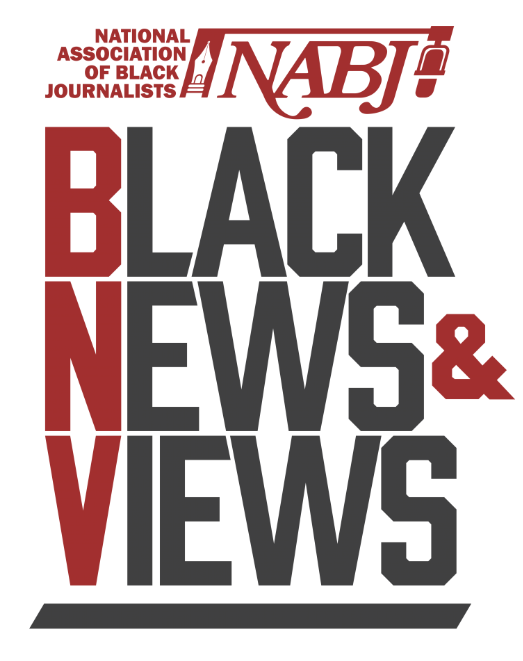
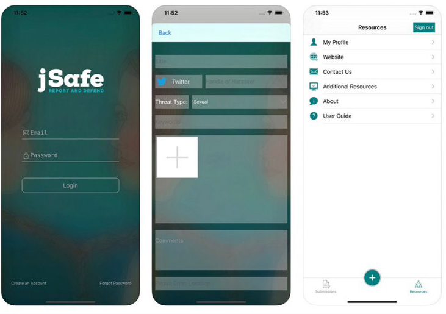
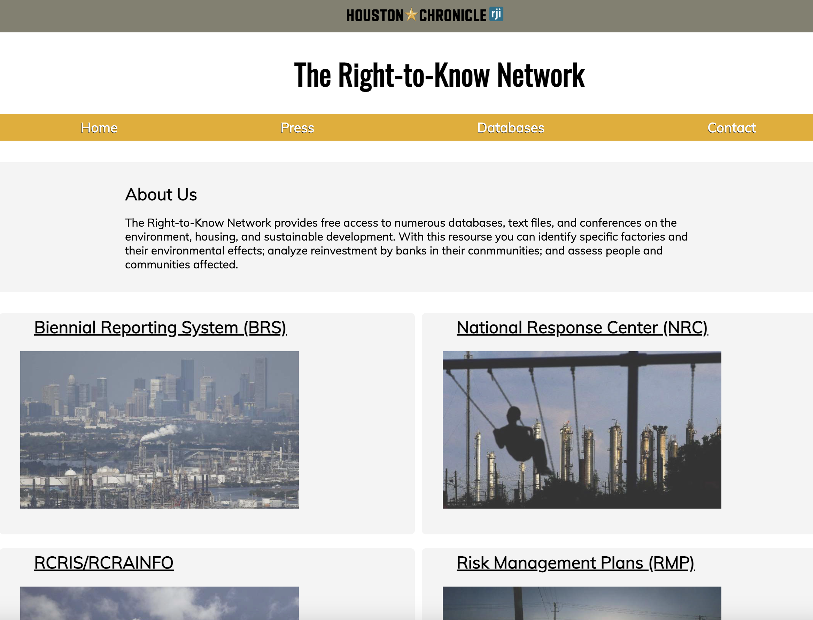

The YESEO app
This Slack based app is free to use and installable in any workspace.
This tool utilizes slash commands in Slack to gather actionable SEO information and insights from your articles and content.
Workshop headlines, view SEO data and identify trends. Available in English, French, Spanish and Portuguese.
2022 RJI Fellow Ryan Restivo

Agenda Watch
Agenda Watch is a free to use platform that harvests the documents that public agencies must make available, like notices of upcoming discussions (agendas) and records of their meetings (minutes).
Agenda Watch collects those documents on a daily basis from agencies across the country and provides them to journalists.
A partnership project of RJI and Big Local News

Black News and Views
Black News and Views is a platform built with NABJ to provide news about Black communities by Black journalists.
BNV also aggregates content from Black journalists at a wide range of news partners, including Black-owned media and national media such as the Washington Post, USA Today, Bloomberg, ESPN, NBC and CNBC.
A partnership project of RJI and NABJ

JSafe App
The app allows journalists to document an incident by uploading information about their attackers, such as email addresses or social media handles, and store any photo or videos — including screenshots — related to the occurrence. The journalists also can select a threat level of an incident and request a follow up from the Coalition of Women in Journalism. In addition to managing the app, the coalition provides resources for journalists to connect with, such as a lawyer or a therapist.
A partnership project of RJI and Coalition for Women in Journalism

The Right to Know Network
The Right-to-Know Network provides free access to numerous databases, text files, and conferences on the environment, housing, and sustainable development. With this resourse you can identify specific factories and their environmental effects; analyze reinvestment by banks in their conmmunities; and assess people and communities affected.